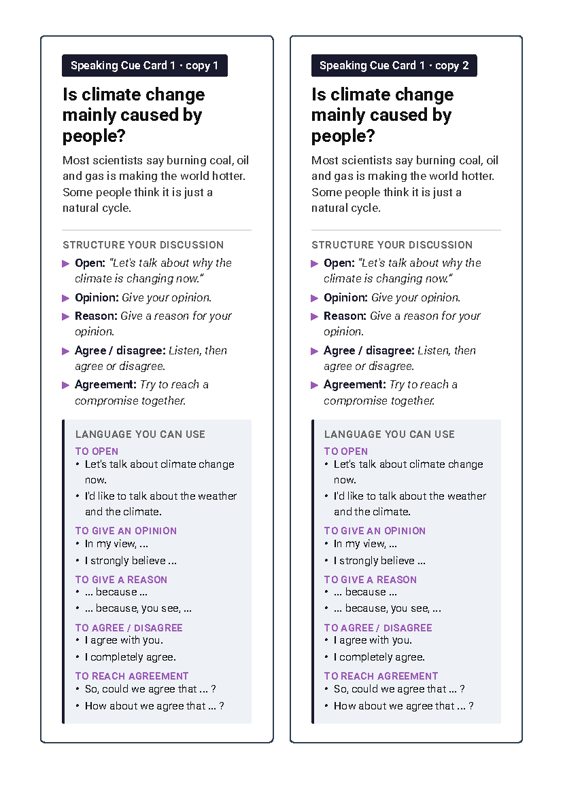
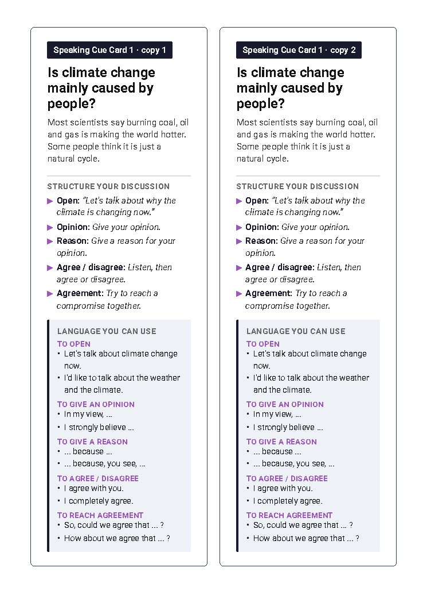
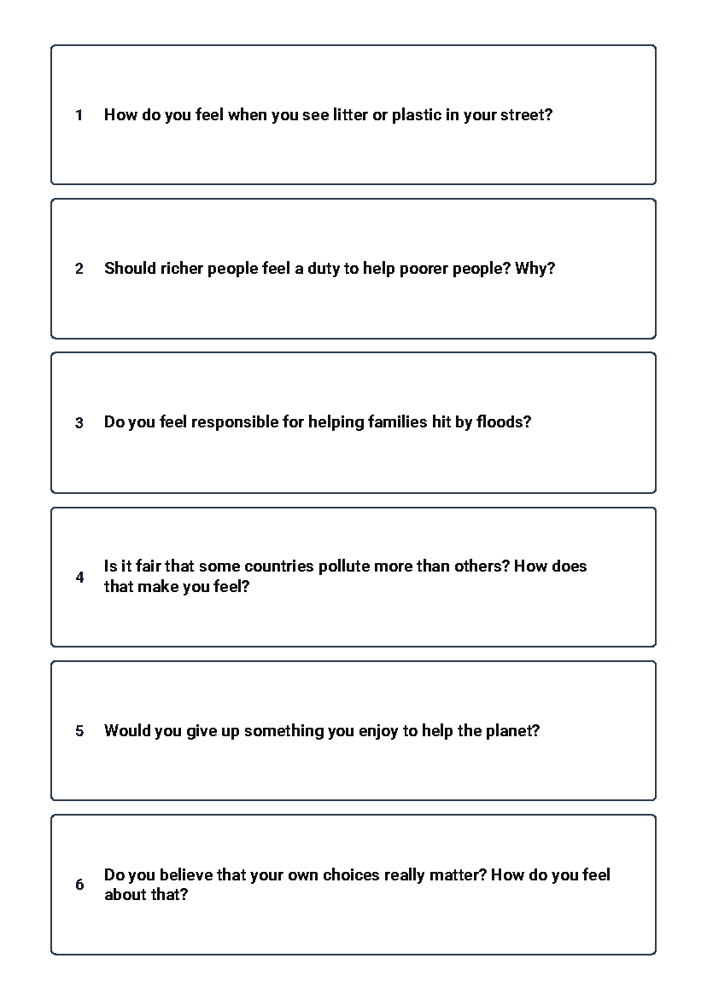

Why is this lesson important?
- This flood shows how a small event can become a disaster.
- Floods are a real risk across Asia, including Thailand.
- You will practise talking about climate change in English.
Listen and write the questions
You will hear eight questions.
Write each question. You will hear each one twice.
Dictation tape
Check your dictation — Part 1
Emma says the flood was not a normal flood. What was it like, and why was it so dangerous?
Why was the loud noise so surprising to the people in Nuwakot?
Check your dictation — Part 2
Why did so many people first believe that there had been an earthquake?
Why is it so hard for scientists to warn people before a glacier collapses?
Check your dictation — Part 3
Give two examples of the damage that the flood caused to buildings and infrastructure.
How many people were affected in total, and around how many children lost their classrooms?
Check your dictation — Part 4
Emma says the danger is not over. Why?
Why does Emma think that this is a climate story, and not only a Nepal story?
Now listen to the interview
A radio interview about the flood.
There are four parts.
Listen to each part twice. Then answer the questions.
Interview — Part 1
Listen to Part 1
Interview — Part 2
Listen to Part 2
Interview — Part 3
Listen to Part 3
Interview — Part 4
Listen to Part 4
Answers — Part 1
| Question | What was the flood like, and why was it so dangerous? |
| Answer | It was a wall of water, mud, rocks and broken ice. It moved incredibly fast, so people had no time to run. |
| Question | Why was the loud noise so surprising? |
| Answer | It sounded like thunder, but the sky was clear and blue, with no clouds. |
Answers — Part 2
| Question | Why did many people first think it was an earthquake? |
| Answer | The US Geological Survey recorded a small tremor, about 4.4. So people thought the earthquake had caused a landslide. |
| Question | Why is it so hard to warn people before a glacier collapses? |
| Answer | The Himalayas are huge and remote, and the weather was calm that day. There are thousands of glaciers, so scientists cannot say which one will break, or when. |
Answers — Part 3
| Question | Give two examples of damage to buildings and infrastructure. |
| Answer | It destroyed homes, roads and bridges. It also blocked the tunnels of hydroelectric power stations. |
| Question | How many people were affected? How many children lost classrooms? |
| Answer | About 65,000 people were affected. Around 10,000 children lost their classrooms. |
Answers — Part 4
| Question | Why is the danger not over? |
| Answer | A barrier lake has formed behind rocks and debris. Water is building up, and if it breaks, there could be a second flood. |
| Question | Why is this a climate story, not only a Nepal story? |
| Answer | The warming planet makes flooding worse across Asia. Thailand is also at risk, and countries like Nepal cause little of the problem but feel it first. |

Work with a partner. Use the card structure.
Open — start the talk.
Opinion — say what you think.
Reason — give a reason.
Agree or disagree — reply to your partner.
Agreement — find a compromise.
Speed dating — Card Set A

Pair up. One card each. Discuss for 2 minutes.
Use the structure and the language on the card. Then move to the next partner.
Speed dating — Card Set B

Now no language help. Talk for 2 minutes.
Use your own ideas. Then move to the next partner.